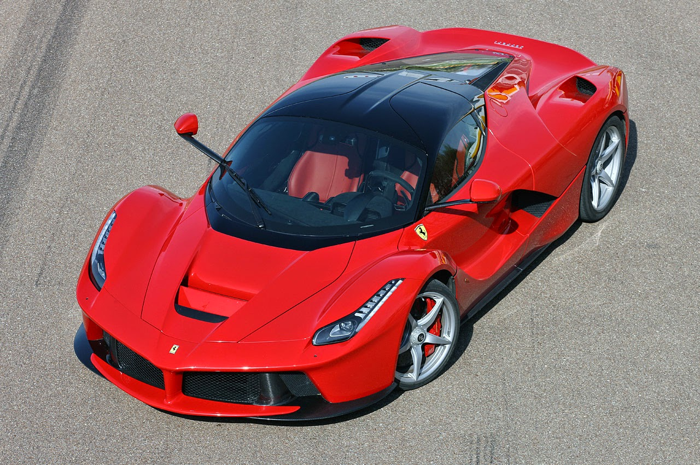
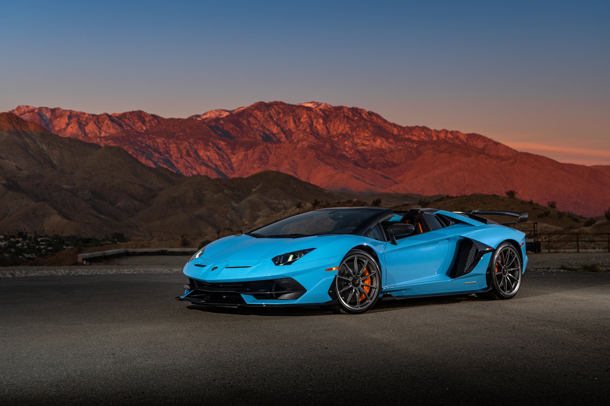
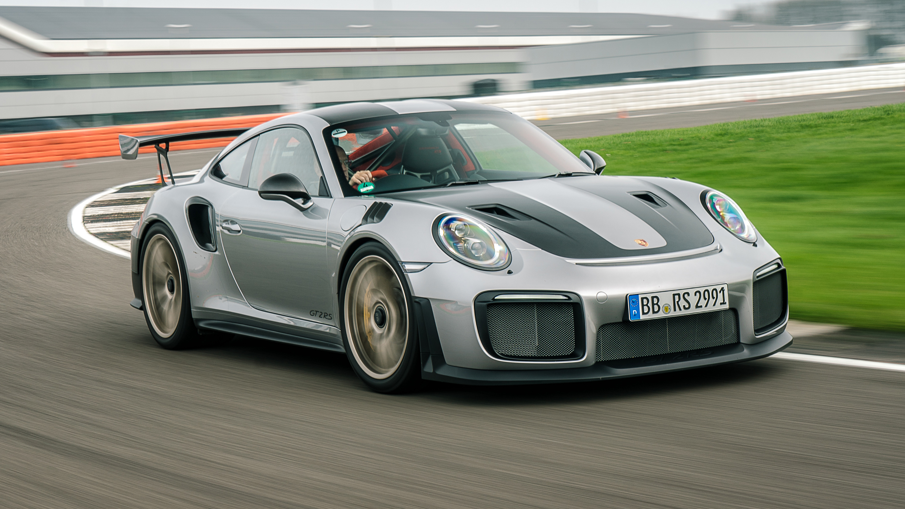
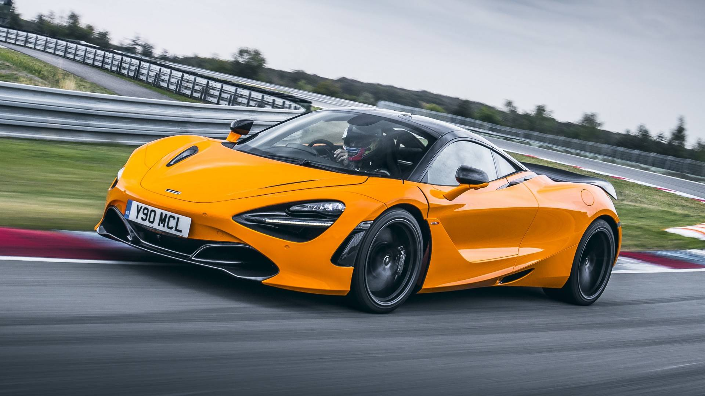
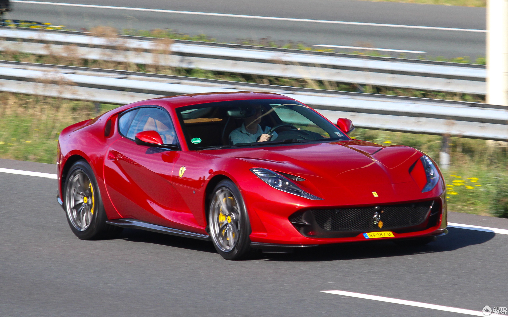
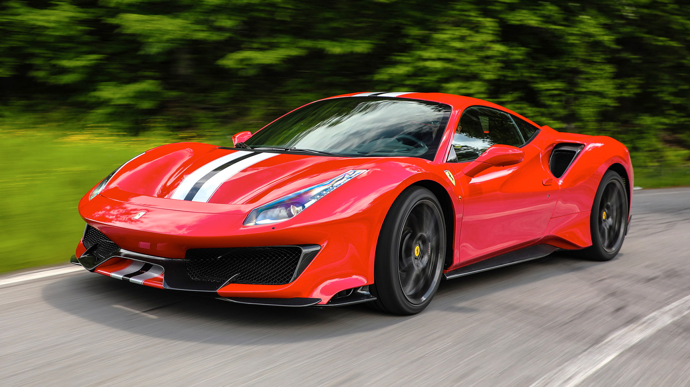
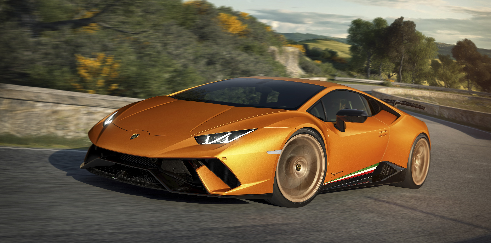

Welkom bij LuxeHyper Verhuur
Ontdek onze exclusieve collectie van 's werelds meest luxueuze hyperauto's.
Onze Hyperauto's
-
Ferrari LaFerrari
Beschikbaarheid: Ja
De Ferrari LaFerrari is een van de meest gewilde hyperauto's ter wereld. Met zijn krachtige V12-motor en hybride technologie biedt hij ongekende prestaties.
-
Lamborghini Aventador
Beschikbaarheid: Nee
De Lamborghini Aventador is een icoon in de wereld van hyperauto's. Met zijn opvallende ontwerp en indrukwekkende V12-motor trekt hij overal de aandacht.
-
Porsche 911 GT2 RS
Beschikbaarheid: Ja
De Porsche 911 GT2 RS is een high-performance machine die perfect is voor liefhebbers van snelheid en precisie. Zijn race-geïnspireerde technologieën maken hem uniek.
-
McLaren 720
Beschikbaarheid: Nee
De McLaren 720S is een meesterwerk van technische innovatie en snelheid. Met zijn adembenemende vormgeving en krachtige V8-motor biedt hij een ongeëvenaarde rijervaring. Deze hyperauto is de belichaming van pure snelheid en precisie.
-
Ferrari 812 Superfast
Beschikbaarheid: Ja
De Ferrari 812 Superfast is de belichaming van Italiaanse elegantie en kracht. Met zijn verbluffende V12-motor die tot 800 pk levert, accelereert hij in een oogwenk. Deze hyperauto biedt ultieme prestaties verpakt in een prachtig design.
-
Ferrari 488 Pista
Beschikbaarheid: Ja
De Ferrari 488 Pista is ontworpen voor het circuit maar straalt ook op de open weg. Met zijn turbogeladen V8-motor en geavanceerde aerodynamica biedt hij ongekende snelheid en wendbaarheid. Deze hyperauto is een icoon voor snelheidsliefhebbers.
-
Lamborghini Huracan
Beschikbaarheid: Nee
De Lamborghini Huracan is een bolide met een onmiskenbaar karakter en opvallende looks. Met zijn krachtige V10-motor en vierwielaandrijving biedt hij een indrukwekkende mix van prestaties en stijl. Deze hyperauto is een symbool van Italiaanse passie op de weg.
Contacteer Ons
Neem contact met ons op voor meer informatie over beschikbaarheid en prijzen.